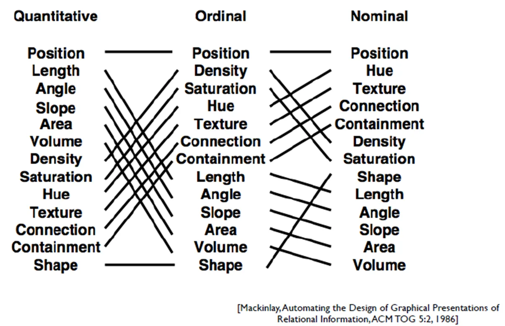
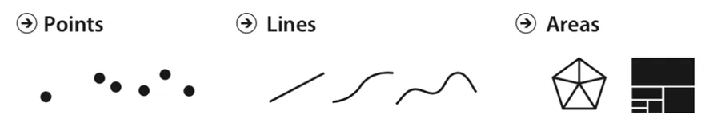
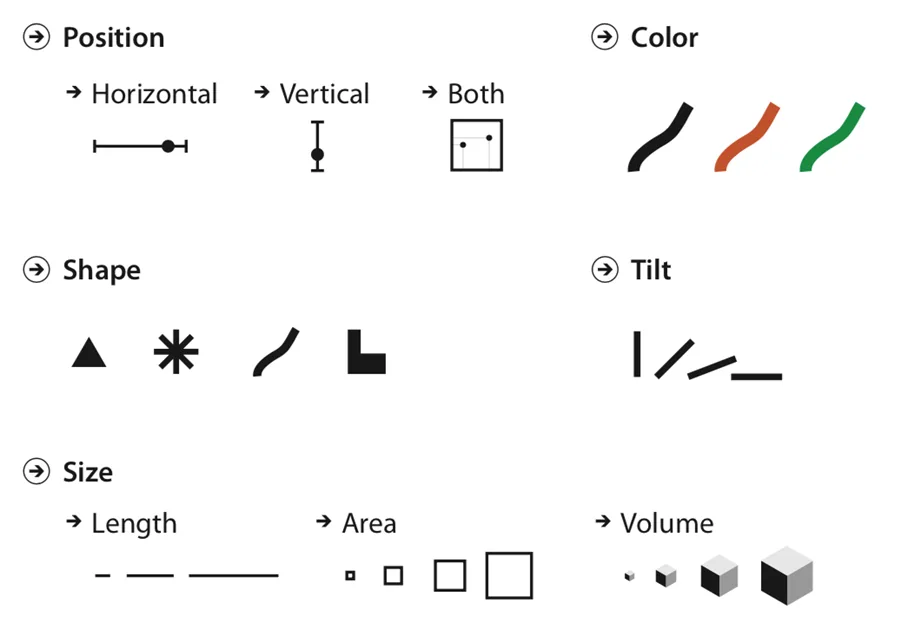
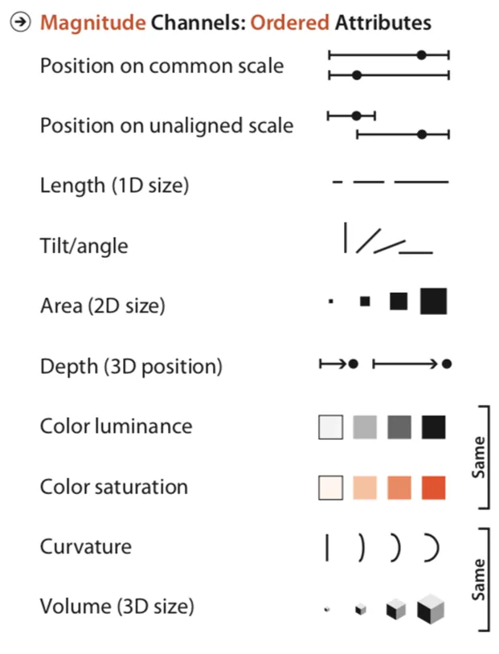
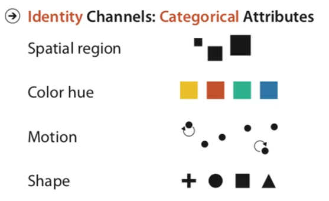

The complete pipeline from "getting a table" to "drawing a chart"
Your Original Case
3 visualization pipeline models: ① Reference the Card 1999 model for box flowcharts → ② Mackinlay's automation principles → ③ van Wijk's model (with interaction feedback).
The original image is your concept map. This lesson uses D3 to redraw this concept map — every node expands details when clicked.
Embedded Theory: Three Classic Models of the Visualization Pipeline
Model
Author / Year
Core Idea
Card Data Flow Model
Card, Mackinlay & Shneiderman, 1999
Raw data → data table → visual structure → view (nested transformations D→T→V→C/L/S)
Mackinlay's Automation Principles
Mackinlay, 1986
For each data type, automatically pick the visual channel with the highest “quantitative accuracy” (e.g., quantitative → position, categorical → hue)
van Wijk Feedback Model
van Wijk, 2005
View ↔ Filter ↔ Param ↔ Other Views — emphasizing the interaction feedback loop
Core teaching points: the three models describe different facets of the same thing — Card gives you the “pipeline,” Mackinlay gives you “automated decisions,” and van Wijk gives you the “feedback loop.” They layer on top of each other rather than conflict.
Card model: tells you “after transform comes mapping, after mapping comes view”
Mackinlay: tells you “how to automate the mapping step”
van Wijk: tells you “after view, you still need to feed user actions back”
Key Code — SVG Flowchart Nodes + Arrows
5 step nodes arranged horizontally, connected by SVG-marker-drawn arrows between adjacent nodes.
Key explanation:marker-end="url(#arrowhead)" is SVG's referencing mechanism — it “embeds” a shape defined inside <defs> at the line's end; classed("selected", predicate) takes a boolean function and toggles the “selected” state of every node in one call, so you avoid writing forEach yourself.
▶ Interactive Flowchart Demo
👉 Click any node to see its mapping in the Card / Mackinlay / van Wijk models
Loading demo…
2.2
Classification Tree (multi-level d3.rollup)
From “group by major” to “group by dimension combinations”
📌 Where This Sits: Data Transformation
The Card 1999 data-flow model splits visualization into four stages: raw data → (transform) → data table → (map) → visual structure → (render) → view. Section 2.2 is the first arrow, “raw data → data table” — i.e. Data Transformation.
Your Original Case
Use the freshman data to do rollup bucketed aggregation by “major / class”. The core of your demo is d3.rollup's chained calls — one function that performs multi-dimensional grouping.
Theory Patch: Four Operations of Data Transformation (Card ’s D layer)
Going from “raw data” to a “data table,” the D layer performs four kinds of operations:
Operation
What it does
D3 implementation
Clean / filter
Remove missing/outliers; keep rows matching a condition
.filter(), d3.csv(row) callback
Aggregate
Group by key, reduce each group to a single value
d3.rollup(), d3.group()
Join
Combine two tables by key (e.g., student table joined to class table)
d3.map + manual indexing
Derive
Compute a new column from existing ones (e.g., extract “major” from “class”)
compute a new field in the row callback
The rollup aggregation demonstrated here belongs to the “aggregate” row. But reading this table, you realize data transformation is the “first kilometer” of the whole pipeline — if the data table isn't clean, all the mapping and rendering downstream is wasted.
Embedded Theory: Functional Aggregation and OLAP Slicing
d3.rollup is a functional composition of “bucket by key, then reduce once”:
js
const result = d3.rollup(
data, // 输入数组
v => v.length, // reducer
d => d.major, // key1（外层）
d => d.class // key2（内层，可选）
);
It returns a Map (not an array, not an object), so:
Iterate using for ([k, v] of m) or m.entries()
Nested rollup produces a nested Map
Difference from d3.group: rollup reduces the in-group data to a single value, while group preserves the original array
Theory Patch: OLAP Slice / Dice / Drill
In 1993 Codd proposed 12 OLAP rules; three of their core operations can be simulated with rollup:
Slice: fix one dimension (e.g., only look at the 2025 cohort) → equivalent to .filter() then rollup
Dice: group by two dimensions → equivalent to a double-key rollup
Drill: drill down level by level → equivalent to nested rollup + recursive expansion
Classroom Takeaway: a visualization system's “drill-down interaction” is typically backed by a combination of rollup + hierarchy. This lesson demonstrates d3.rollup's multi-level capability.
⭐// 双层 rollup：返回嵌套 Map，外层 key=专业，内层 key=班级const nested = d3.rollup(
students,
v => v.length, // 每组聚合为单一值（这里是 count）
d => d.major, // 外层 key
d => d.class // 内层 key（rest 参数，可继续加）
);
// 遍历嵌套 Map：for (const [major, inner] of nested) {
for (const [cls, count] of inner) {
console.log(major, cls, count);
}
}
Key explanation: The key parameter of d3.rollup is a rest parameter (...keys), so passing 1 → single-layer Map, 2 → nested Map, 3 → 3-layer nesting. This is OLAP's “dimension combination.”
Key Code — Extract the Major via Regex
The CSV only has a “class” field (e.g., “Software Engineering Class 1”), so a regex is needed to split out the “major” and the “class number.”
Key explanation: In the regex /^(.+?)(\d+班)$/, the .+? is non-greedy matching — it keeps the middle as short as possible and leaves the tail for \d+班. Without non-greedy: .+ would consume the whole string, leaving nothing, and m[1] would be undefined. This is a regex pitfall students frequently step on; you must master it.
▶ d3.rollup Multi-level Aggregation Demo
Loading demo…
2.3
Tree Layout (Reingold-Tilford)
The algorithmic core of hierarchical data → screen coordinates
📌 Where This Sits: Visual Mapping
Following the 2.2 data transformation, we now have a “data table.” Section 2.3 is the second arrow, “data table → visual structure” — i.e. Visual Mapping. It answers one core question: for each data attribute, which visual channel should express it?
Your Original Case
Your Section 4.2 mentioned “tree-structure visualization.” This lesson expands on the tree layout algorithm — once you have hierarchical data, how do you place nodes on screen without overlap?
Theory Core: What Is a Visual Channel? Mackinlay's Ranking
A visual channel is the carrier that “encodes data onto a visual element”: position, length, area, angle, color, shape, texture… Mackinlay (1986) gave the classic ranking: for different data types, the quantitative accuracy of each channel differs. That is the figure below.

Figure 1 · Mackinlay (1986) channel ranking: for Quantitative / Ordinal / Nominal data, the quantitative-accuracy ordering of each channel. Position is always the most accurate.
Position: ranks #1 for all three types — the eye is most sensitive to position
Quantitative data: length → angle → slope → area (bar charts beat area charts)
Theory Core: Marks and the Composition of Visual Channels
The visual structure is built on marks: Point, Line, Area. These marks are then “marked up” through channels: position, color, shape, tilt, size. The next two figures break this apart.

Figure 2 · Three families of marks: Points, Lines, Areas. Marks determine “what a datum looks like” — the skeleton of the visual structure.

Figure 3 · Common visual-channel families: Position (horizontal / vertical / both), Color, Shape, Tilt, Size (length / area / volume).
Theory Core: Two Channel Classes — Magnitude vs Identity
By “whether it can express magnitude,” channels split into two classes: Magnitude channels express ordered / quantitative attributes; Identity channels express categorical attributes. Picking the wrong class misleads readers.

Figure 4 · Magnitude Channels: express “ordered attributes.” Ordered by accuracy — position on a common scale is best; length / tilt / area next; color luminance, saturation, and volume are weakest (all marked “Same” — ambiguous ordering).

Figure 5 · Identity Channels: express “categorical attributes” — spatial region, hue, motion, shape. They distinguish different categories but cannot rank “more vs less.”
Where this lesson lands: tree layout (Reingold-Tilford) is essentially a visual mapping — it uses the position channel to encode hierarchy as “parent above, children below.” The algorithm follows.
Embedded Theory: The Reingold-Tilford Algorithm (the core of d3.tree)
The algorithm proposed by Reingold & Tilford in 1981 is still the implementation core of d3.tree(). Core idea:
First pass (bottom-up): for each parent node, compute how much horizontal space its left and right subtrees “occupy”
Second pass (top-down): assign every node an absolute x-coordinate (so siblings hug the parent's centerline without overlapping)
Third pass: handle “threads” — fix the alignment when children cross the parent's centerline
Complexity handling:
O(n) time — faster than a naive “recursive halving”
A node's minimum left/right subtree width = the horizontal space needed at minimum to hold all its children
Key explanation:treeData.x is the depth direction (vertical by default), while treeData.y is the horizontal direction (different nodes at the same depth). So linkHorizontal uses x=d.y, y=d.x — the horizontal direction rides on y, and the vertical direction rides on x. This “x-axis rides on y, y-axis rides on x” swap is unique to horizontal trees — commit it to memory.
Key explanation: The default value of separation is (a, b) => a.parent === b.parent ? 1 : 2. Change it to 0.5 → everything squishes together; change it to 2.0 → the tree widens. There is a slider in the demo so you can adjust it in real time and see the effect.
▶ Tree Layout Demo
👉 Switch aggregation levels (major → class / gender → major → class, etc.) and drag the slider to adjust separation · this is visual mapping via the “position channel”
Loading demo…
2.4
Tree-List Rendering (classed + event delegation)
Render the tree as a collapsible HTML list — handling three pitfalls: click, bubbling, and delegation
📌 Where This Sits: View Rendering + User Interaction
Following the 2.3 visual mapping, we now have a “visual structure.” Section 2.4 covers the last two arrows: “visual structure → view” (rendering) and “view ↔ user” (interaction feedback). Card's V layer and van Wijk's feedback loop both land here.
Your Original Case
The original document used classed to control node styles and stopPropagation to block bubbling. The focus is on turning the D3 tree layout output into an interactive HTML list.
Embedded Theory: The Three Phases of DOM Events + Event Delegation
The browser's event flow has three phases (per the DOM spec):
Capturing: window → document → ... → target element (outside to inside)
Target: the target element itself
Bubbling: target element → ... → document → window (inside to outside)
By default, listeners are registered on the bubbling phase. Inside a listener you can call e.stopPropagation() to cut off bubbling so ancestor listeners no longer fire.
Theory Patch: Animation — the “time dimension” of view rendering
Animation (transition) isn't “fancy” — it's the time dimension of view rendering. In D3 you use .transition().duration(ms) to smoothly interpolate an attribute from its old value to a new one. The pedagogical value lies in the single duration parameter:
duration=0: instant jump — you can't “see the change happen”
duration=500: a 0.5 s transition — you see the expand / collapse / move smoothly
duration>1500: too slow — students start to drift
This lesson's interactive demo adds a duration slider so you can change this parameter live and see “how rendering unfolds over time.” It's the most direct lesson on “view rendering + interaction feedback.”
Theory Patch: Event Delegation
Problem: if a list has 1000 li elements and you bind a click listener to each → it's slow, memory-heavy, and newly added elements have to be re-bound.
Solution: bind only 1 click listener on the parent element (ul / div) and lean on bubbling — a click on any child eventually triggers the parent's listener. Use e.target.closest('.label') to figure out “which child element was actually clicked.”
Advantage: 1 listener replaces N, and any future newly added elements are automatically supported.
Key API: D3 classed()
js
selection.classed("selected", true); // 1) 添加 class
selection.classed("selected", false); // 2) 移除 class
selection.classed("selected", d => d.id === pickId); // 3) 函数式批量切换
Key explanation: This is the classic pattern of “stopping the toggle button from bubbling up to the li's select listener.” Without stopPropagation, clicking the toggle would simultaneously trigger “toggle collapse” and “select the node,” which would confuse users. This is a core teaching point about the DOM event mechanism.
Key Code — Nested Recursive buildList
Recursive rendering with d3 selections: every li contains another ul/li, then buildList recurses into it.
The “time dimension” of view rendering: smoothly interpolate node expand / collapse instead of an instant jump. duration is controlled by a live slider.
Key explanation:Why use innerHTML = "" to clear and redraw? D3 has no “smart-update” API for tree structures (where hierarchy changes) — expanding or collapsing a node changes the parent-child structure, and the simplest approach is a full re-render. Use selection.each() together with d3.select(this) to convert the raw element back into a selection — this is the key pattern for D3-native-DOM interop.
▶ Collapsible Tree List
👉 Click the triangle to toggle collapse / expand · click an item to select it (see the log) · drag the “animation duration” slider to see the transition